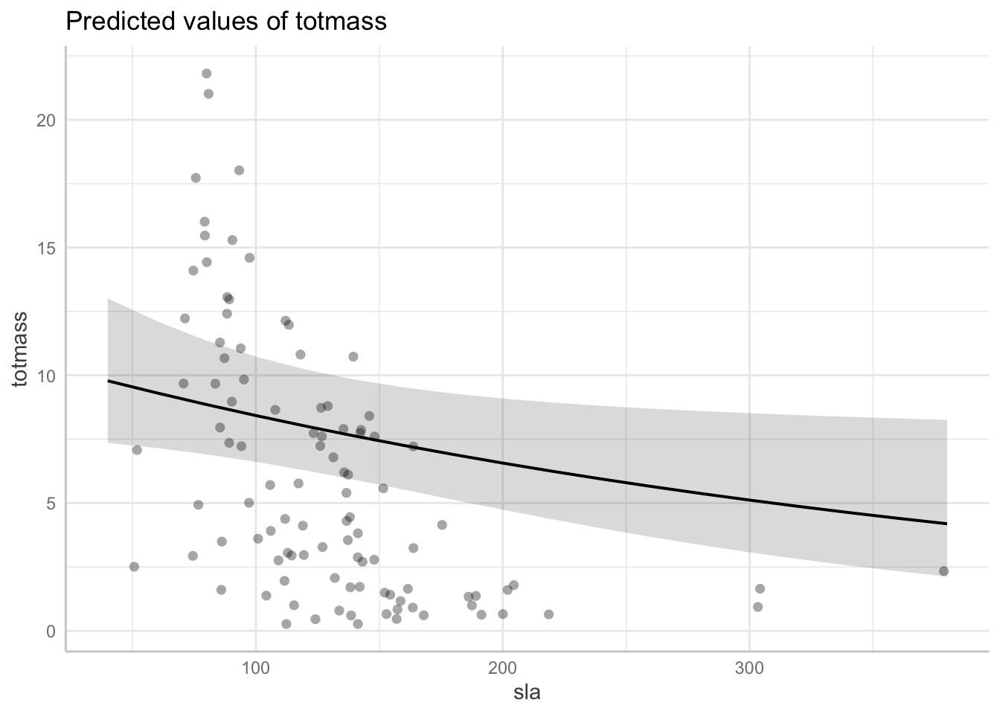

library(tidyverse)library(here)library(janitor)library(ggeffects)library(performance)library(naniar) # or equivalentlibrary(flextable) # or equivalentlibrary(car)library(broom)library(dplyr)# would be nice to havelibrary(corrplot)library(AICcmodavg)library(GGally)
Introduction
Sarracenia are a pitcher plant that is a genus of carnivorous plants. It is typically found in nutrient-poor environments and has developed the carnivorous capabilities to supplement its nutrient intake (Hotti et al. 2017). Humans may care about sarracenia because it provides medical services to humans. The genus contains high amounts of numerous compounds with anti-inflammatory, antioxidant, antiviral and antibacterial properties (Pilarska et al. 2022). It can be used to treat specific illnesses such as type 2 diabetes and tuberculosis-like symptoms (Podolak et al. 2022). Since sarracenia is very beneficial to humans, growing it in large amounts is ideal. It can be useful to know what morphological, physiological, or taxonomic characteristics can predict the largest amounts of individual biomass. In this analysis, I hope to address what morphological, physiological, or taxonomic characteristics predict individual biomass. Various characteristics include chlorophyll, mass, specific leaf area, phyllodes, and pitchers and number of phyllodes. The null hypothesis is: None of the predictor variables, species type, feedlevel, specific leaf area, chlorophyll, mass-based light-saturated photosynthetic rate of youngest leaf, total number of pitchers and phyllodes produced by each plant, and number of phyllodes produced by each plant can predict individual biomass. The alternative hypothesis is: At least one of the predictor variables, species type, feedlevel, specific leaf area, chlorophyll, mass-based light-saturated photosynthetic rate of youngest leaf, total number of pitchers and phyllodes produced by each plant, and number of phyllodes produced by each plant can predict individual biomass.
Methods
Write a methods section that includes
a. Sampling methods (these should be summarized from the metadata and cited)
The data was sampled in 2005 from the Harvard Forest in Massachusetts. Local ecologists collected data on two plants of each Sarracenia species. Each plant was assigned to one of six feeding levels in a regression design ranging from 0 - 0.25g of finely ground wasps per feeding (for small species), 0 - 0.5g (for species of intermediate sizes), and 0 - 1.0g (for large species) and fed once a week for seven weeks. There were 120 plants total and aboveground size and mass were measured before and after treatment (Ellison et al. 2017).
The data was first read into the programming langauge (R) and assigned a unique name. The column names were then cleaned to remove any spaces or capital letters. The columns are analysis focused on, totmass, species, feedlevel, sla, chlorophyll, amass, num_lvs, num_phylls, were then selected to only be included in the dataframe.
Code
plant <-read.csv(here("data/knb-lter-hfr/hf109-01-sarracenia.csv")) %>%#making column names cleaner clean_names() %>%#selecting the columns of interest select(totmass, species, feedlevel, sla, chlorophyll, amass, num_lvs, num_phylls)
c. Visualization of missing observations with an accompanying caption and discussion
Next, a visualization of missing data observations from the selected dataframe was created and indicated there were missing observations for the variables, Chlorophyll, Mass, Specific Leaf Area, Phyllodes, and Pitchers and Phyllodes. These variables are relevant to our hypothesis because they include several of the variables used to predict individual biomass. The missing values are relevant so they must be filtered out as a subset of the dataframe.
Code
#visualizing missing observations gg_miss_var(plant)+#adding a caption # labs( caption = "Visualization of missing data observations. Chlorophyll, Mass, Specific Leaf Area, Phyllodes, and Pitchers and Phyllodes data is missing.") +theme(plot.caption =element_text(size=10, hjust =0.8, vjust =2))
Figure 1: Visualization of missing data observations. Chlorophyll, Mass, Specific Leaf Area, Phyllodes, and Pitchers. data is missing.
Code
#create a subset of the plant dataframe that does not include missing values plant_subset <- plant %>%drop_na(sla, chlorophyll, amass, num_lvs, num_phylls)
A correlation plot based on Pearson’s correlation between the variables of interest was visualized. Pearson’s correlation measures the strength of the linear relationship between two variables with a value between -1 to 1. A value of -1 means total negative linear correlation, a value of 0 means no correlation, and a value of +1 means a total positive correlation (Nettleton, 2014). Most of the variables have a correlartion of less than 0.3, meaning they are slightly positively correlated.
Code
# calculate Pearson's r for numerical values onlyplant_cor <- plant_subset %>%select(feedlevel:num_phylls) %>%cor(method ="pearson")# creating a correlation plotcorrplot(plant_cor,# change the shape of what's in the cellsmethod ="ellipse",addCoef.col ="black" )
Figure 2: A correlation plot determining the relationship between variables in the dataset. The higher the number, the higher the positive correlation (and vice versa).
A pair plot was created to further visually explore the data and find the relationship between two variables at a time. The plots that go through the middle are the density plots of the individual variables, which are all skewed to the left. Categorical variables, such as species, do not have a density plot and instead have a bar graph. The plots along the sides explore the relationship between two variables using scatter plots for numerical data and box plots for categorical data.
Figure 3. A pair plot to analyze the paired relationship between all variables in the analysis.
The null model and full model were created to begin the linear regression analysis. The null model assigns the value of the predicted variable, individual mass, to 1 so it is being modeled as a function of a constant term. The full model includes all variables to assess a linear relationship between each predictor variable and individual mass, the response variable.
Code
null <-lm(totmass ~1, data = plant_subset)full <-lm(totmass ~ species + feedlevel + sla + chlorophyll + amass + num_lvs + num_phylls, data = plant_subset)
After creating the linear models, assumption checks were ran to visually and statistically assess normality and homoskedasticity of residuals using diagnostic plots for the full model. The residuals vs fitted plot showed the data points are clustered around the middle line, which is relatively straight. The scale-location plot showed the data points more randomly scattered and the line had a slight upwards slope. These visual assessment indicates there is not heteroscedasticity of residuals. The normal QQ plot was very linear, indicating the data is normal. The Shapiro-Wilk test stated there was non-normality of residuals was detected (p < .001) and the Breusch-Pagan test stated heteroscedasticity (non-constant error variance) was detected (p < .001).
Code
par(mfrow =c(2, 2))plot(full)
Code
#Shapiro-Wilk test check_normality(full)
Warning: Non-normality of residuals detected (p < .001).
The model was transformed using the log function to address the problems with normality and homoscedasticity. Taking the logarithm of the response variable can help stabilize the variance and approximate a more normal distribution.
Code
# create a linear model using the log version of the null model null_log <-lm(log(totmass) ~1, data = plant_subset)# create a linear model using the log version of the full model full_log <-lm(log(totmass) ~ species + feedlevel + sla + chlorophyll + amass + num_lvs + num_phylls, data = plant_subset)# visually check normality and homoskedasticity par(mfrow =c(2, 2))plot(full_log)
Code
# Shapiro-Wilk test check_normality(full_log)
OK: residuals appear as normally distributed (p = 0.107).
OK: Error variance appears to be homoscedastic (p = 0.071).
I chose species with total mass because I wanted to see if the species could predict individual mass, I assumed that there could be a correlation between the two.
Code
# create a new model taking the log of the relationship between total mass and species typemodel1 <-lm(log(totmass) ~ species, data = plant_subset)#plotting to visually assess normality and homoscedasticitypar(mfrow =c(2, 2))plot(model1)
Code
# Shapiro-Wilk test check_normality(model1)
OK: residuals appear as normally distributed (p = 0.374).
OK: Error variance appears to be homoscedastic (p = 0.100).
I chose species with total mass because I wanted to see if the species and the level of food that the plant ate could predict individual mass, I assumed that there could be a correlation between them because more food usually means more mass and I already saw there was a relationship with species type.
Code
model2 <-lm(log(totmass) ~ species + feedlevel, data = plant_subset)plot(model2)
Code
# Shapiro-Wilk test check_normality(model2)
OK: residuals appear as normally distributed (p = 0.339).
OK: Error variance appears to be homoscedastic (p = 0.110).
I chose species with total mass because I wanted to see if the species and the level of food that the plant ate could predict individual mass in addition to some other variables. I assumed that there could be a correlation between them because more food usually means more mass and I already saw there was a relationship with species type.
Code
model3 <-lm(log(totmass) ~ species + feedlevel + amass + chlorophyll, data = plant_subset)plot(model3)
Code
# Shapiro-Wilk test check_normality(model3)
OK: residuals appear as normally distributed (p = 0.157).
OK: Error variance appears to be homoscedastic (p = 0.324).
I evaluated multicollinearity using the variance inflation factor for the full model. Multicollinearity occurs when two or more independent variables have high correlation to one another in a linear regression model. High multicollinearity is a problem because it indicates the variables are not independent and makes the model less reliable.
k. Model comparison using the null model, full model, and additional models from part 7g
Code
AICc(full_log)
[1] 133.9424
Code
AICc(model1)
[1] 157.5751
Code
AICc(model2)
[1] 159.6218
Code
AICc(model3)
[1] 148.9973
Code
AICc(null_log)
[1] 306.0028
Results
We found the full log model including species, feedlevel, specific leaf area, chlorophyll, photosynthetic rate, number of pitchers and phyllodes produced by each plant, number of phyllodes produced by each plant because it had the lowest AICc value. Model summary: residual standard error: 0.413 on 87 degrees of freedom. Multiple R-squared: 0.8687, Adjusted R-squared: 0.8461. F-statistic: 38.38 on 15 and 87 DF, p-value: < 2.2e-16. More information included in table below.
The full log model shows the variables with most influence over the total mass are several species such as salata, flava, leucophylla, spsittacina, rosea, and rubra. The model indicates the environmental variables such as feedlevel, sla, chlorophyll, amass, num_lvs, and num_phylls have are not likely to predict total mass because their estimate is close to 1.
Biologically, this model means that the predicted values of total above- and below-ground plant biomass are negatively linearly correlated with specific leaf area. As specific leaf area increase, mass decreases.
table <-tidy(full_log, conf.int =TRUE, exponentiate =TRUE) %>%# change the p-value numbers if they're really small# change the estmaes, standard error, and t-tstatistics to round to ___ digits# using mutate# make it into a flextableflextable() %>%# fit it to the viewerautofit()table
term
estimate
std.error
statistic
p.value
conf.low
conf.high
(Intercept)
0.2620963
0.597726532
-2.2402271
0.027624109607483009
0.07989121
0.8598503
speciesalata
3.0439700
0.184020930
6.0491086
0.000000035633453091
2.11150520
4.3882219
speciesflava
4.0737422
0.262954818
5.3414577
0.000000728606298866
2.41551101
6.8703374
speciesjonesii
1.3766491
0.196426010
1.6273423
0.107280978897063520
0.93168024
2.0341343
speciesleucophylla
5.5236308
0.227608275
7.5086698
0.000000000048774953
3.51359348
8.6835591
speciesminor
1.4759626
0.187903472
2.0718636
0.041239074384119417
1.01595786
2.1442479
speciespsittacina
0.1929744
0.207034720
-7.9464830
0.000000000006356134
0.12787503
0.2912149
speciespurpurea
0.6946497
0.254380246
-1.4322951
0.155642631385408292
0.41897004
1.1517249
speciesrosea
0.3877543
0.260494896
-3.6368593
0.000466976667424192
0.23104447
0.6507554
speciesrubra
2.3996956
0.196361315
4.4578123
0.000024573993550445
1.62426029
3.5453301
feedlevel
0.6223484
0.234492879
-2.0224719
0.046198841611705246
0.39049690
0.9918580
sla
0.9975100
0.001160230
-2.1487826
0.034429589763780563
0.99521233
0.9998130
chlorophyll
1.0043779
0.001189484
3.6724575
0.000414110175835848
1.00200611
1.0067553
amass
1.0023404
0.002988210
0.7822929
0.436166480376765753
0.99640474
1.0083114
num_lvs
1.0961060
0.022413350
4.0941643
0.000094562482452723
1.04834735
1.1460404
num_phylls
0.9611882
0.051713890
-0.7654630
0.446067519262093981
0.86729854
1.0652419
Code
# use `ggpredict()` to backtranform estimatesmodel_pred <-ggpredict(full_log, terms ="sla", back.transform =TRUE)plot(ggpredict(full_log, terms ="sla", back.transform =TRUE), add.data =TRUE)

Figure 4. A visualization of model predictions for biomass as a function of species, feedlevel, and chlorophyll.
Ellison, Aaron M., Hannah L. Buckley, Thomas E. Miller, and Nicholas J. Gotelli. 2004. “Morphological Variation in Sarracenia Purpurea (Sarraceniaceae): Geographic, Environmental, and Taxonomic Correlates.” American Journal of Botany 91 (11): 1930–35. https://doi.org/10.3732/ajb.91.11.1930.
Hotti, Hannu, et al. "Metabolite Profiling of the Carnivorous Pitcher Plants Darlingtonia and Sarracenia." PLOS ONE, doi.org/10.1371%2Fjournal.pone.0171078. Accessed 7 June 2023.